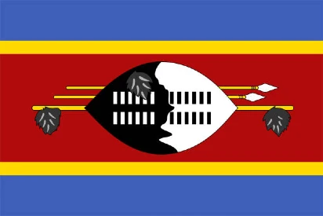

Sakhile Mamba
About Me
My name is Sakhile Mamba. I am from Eswatini, in southern Africa. I am currently pursuing a Bachelor's Degree in Software Development from Brigham Young University Idaho. At the moment, I enjoy spending my free time learning how to develop 2 dimensional web games using the Defold Game engine.
Eswatini

Eswatini, formerly known as Swaziland, is a small, landlocked kingdom in Southern Africa bordered by South Africa and Mozambique. As one of the world's last absolute monarchies, it blends rich cultural traditions, like the annual Umhlanga (Reed Dance) festival, with a diverse landscape featuring mountains, savannas, and rainforests. The country has two capital cities—Mbabane for administration and Lobamba for royalty and parliament—and utilizes both the Lilangeni and the South African Rand as legal tender. Known for its warm hospitality, Eswatini retains deep-rooted customs alongside wildlife reserves like Hlane Royal National Park, making it a culturally distinct and ecologically rich nation despite its compact size